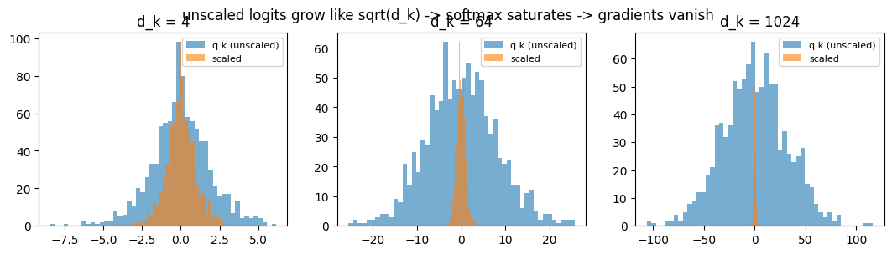
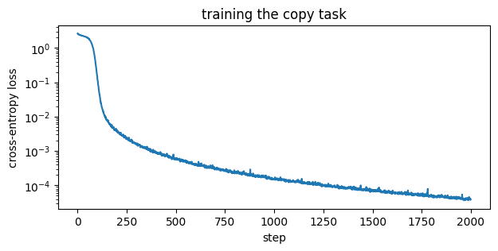
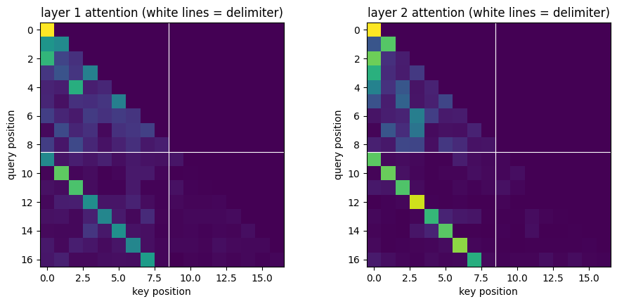

Walkthrough - Attention and a Tiny Transformer#
We will:
Implement scaled dot-product attention from scratch and check it against PyTorch.
Visualize attention weights.
Build a tiny causal transformer and train it on a toy task: copying a sequence after a delimiter (impossible without attending far back).
Companion lesson: Lesson 05 - Attention and Transformers.
import math
import matplotlib.pyplot as plt
import torch
import torch.nn as nn
import torch.nn.functional as F
from tqdm import tqdm
torch.manual_seed(0)
device = torch.device("cuda" if torch.cuda.is_available() else "cpu")
print(device)
cpu
Part 1 - Scaled dot-product attention from scratch#
def attention(q, k, v, causal=False):
"""q, k, v: (..., seq, d_k). Returns (output, attention weights)."""
d_k = q.shape[-1]
scores = q @ k.transpose(-2, -1) / math.sqrt(d_k) # (..., seq, seq)
if causal:
n = scores.shape[-1]
mask = torch.triu(torch.ones(n, n, dtype=torch.bool), diagonal=1) # future positions
scores = scores.masked_fill(mask, float("-inf"))
weights = F.softmax(scores, dim=-1)
return weights @ v, weights
# sanity check against PyTorch's implementation
q, k, v = torch.randn(3, 8, 16), torch.randn(3, 8, 16), torch.randn(3, 8, 16)
ours, _ = attention(q, k, v, causal=True)
ref = F.scaled_dot_product_attention(q, k, v, is_causal=True)
print("max abs difference vs torch:", (ours - ref).abs().max().item())
max abs difference vs torch: 0.0
Why the \(\sqrt{d_k}\)? Watch the softmax saturate without it.#
d_ks = [4, 64, 1024]
fig, axes = plt.subplots(1, 3, figsize=(13, 3))
for ax, d_k in zip(axes, d_ks):
q, k = torch.randn(1000, d_k), torch.randn(1000, d_k)
raw = (q * k).sum(-1)
ax.hist(raw.numpy(), bins=50, alpha=0.6, label="q.k (unscaled)")
ax.hist((raw / math.sqrt(d_k)).numpy(), bins=50, alpha=0.6, label="scaled")
ax.set_title(f"d_k = {d_k}")
ax.legend(fontsize=8)
plt.suptitle("unscaled logits grow like sqrt(d_k) -> softmax saturates -> gradients vanish")
plt.show()

Part 2 - The task: copy after a delimiter#
Input: a b c d | . . . . -> the model must output a b c d at the positions after |.
Position \(i\) after the delimiter needs the token at position \(i - L - 1\): pure long-range
attention, no local pattern helps.
VOCAB = 12 # tokens 0..9 are symbols, 10 = delimiter, 11 = pad/dummy
L = 8 # length of the sequence to copy
def make_batch(batch_size):
symbols = torch.randint(0, 10, (batch_size, L))
delim = torch.full((batch_size, 1), 10)
dummies = torch.full((batch_size, L), 11)
x = torch.cat([symbols, delim, dummies], dim=1) # (B, 2L+1)
y = torch.full_like(x, -100) # -100 = ignored by the loss
y[:, L + 1:] = symbols # predict the copy after '|'
return x.to(device), y.to(device)
x, y = make_batch(2)
print("input :", x[0].tolist())
print("target:", y[0].tolist())
input : [4, 3, 2, 0, 6, 2, 6, 7, 10, 11, 11, 11, 11, 11, 11, 11, 11]
target: [-100, -100, -100, -100, -100, -100, -100, -100, -100, 4, 3, 2, 0, 6, 2, 6, 7]
Part 3 - A tiny transformer (pre-norm blocks, learned positions)#
class Block(nn.Module):
def __init__(self, d, heads):
super().__init__()
self.ln1, self.ln2 = nn.LayerNorm(d), nn.LayerNorm(d)
self.attn = nn.MultiheadAttention(d, heads, batch_first=True)
self.mlp = nn.Sequential(nn.Linear(d, 4 * d), nn.GELU(), nn.Linear(4 * d, d))
def forward(self, x, mask):
h = self.ln1(x)
a, w = self.attn(h, h, h, attn_mask=mask, need_weights=True, average_attn_weights=True)
x = x + a # residual connection around attention
x = x + self.mlp(self.ln2(x)) # residual around the position-wise MLP
return x, w
class TinyTransformer(nn.Module):
def __init__(self, vocab=VOCAB, d=64, heads=4, n_layers=2, max_len=64):
super().__init__()
self.tok = nn.Embedding(vocab, d)
self.pos = nn.Embedding(max_len, d) # learned positional embeddings
self.blocks = nn.ModuleList([Block(d, heads) for _ in range(n_layers)])
self.head = nn.Linear(d, vocab)
def forward(self, x):
n = x.shape[1]
causal = torch.triu(torch.ones(n, n, dtype=torch.bool, device=x.device), 1)
h = self.tok(x) + self.pos(torch.arange(n, device=x.device))
attn_maps = []
for block in self.blocks:
h, w = block(h, causal)
attn_maps.append(w)
return self.head(h), attn_maps
model = TinyTransformer().to(device)
print(f"parameters: {sum(p.numel() for p in model.parameters()):,}")
parameters: 105,612
opt = torch.optim.AdamW(model.parameters(), lr=3e-4)
losses = []
pbar = tqdm(range(2000))
for step in pbar:
x, y = make_batch(64)
logits, _ = model(x)
loss = F.cross_entropy(logits.reshape(-1, VOCAB), y.reshape(-1), ignore_index=-100)
opt.zero_grad()
loss.backward()
opt.step()
losses.append(loss.item())
if step % 200 == 0:
pbar.set_description(f"loss {loss.item():.3f}")
plt.figure(figsize=(7, 3))
plt.plot(losses)
plt.xlabel("step"); plt.ylabel("cross-entropy loss"); plt.yscale("log")
plt.title("training the copy task")
plt.show()
0%| | 0/2000 [00:00<?, ?it/s]
loss 2.621: 0%| | 0/2000 [00:00<?, ?it/s]
loss 2.621: 0%| | 1/2000 [00:00<05:56, 5.61it/s]
loss 2.621: 0%| | 9/2000 [00:00<00:52, 37.57it/s]
loss 2.621: 1%| | 17/2000 [00:00<00:37, 52.43it/s]
loss 2.621: 1%|▏ | 25/2000 [00:00<00:32, 60.40it/s]
loss 2.621: 2%|▏ | 33/2000 [00:00<00:30, 65.39it/s]
loss 2.621: 2%|▏ | 41/2000 [00:00<00:28, 68.74it/s]
loss 2.621: 2%|▏ | 49/2000 [00:00<00:27, 71.01it/s]
loss 2.621: 3%|▎ | 57/2000 [00:00<00:26, 72.66it/s]
loss 2.621: 3%|▎ | 65/2000 [00:01<00:26, 73.65it/s]
loss 2.621: 4%|▎ | 73/2000 [00:01<00:25, 74.37it/s]
loss 2.621: 4%|▍ | 81/2000 [00:01<00:25, 74.74it/s]
loss 2.621: 4%|▍ | 89/2000 [00:01<00:25, 74.82it/s]
loss 2.621: 5%|▍ | 97/2000 [00:01<00:25, 74.73it/s]
loss 2.621: 5%|▌ | 105/2000 [00:01<00:25, 74.98it/s]
loss 2.621: 6%|▌ | 113/2000 [00:01<00:25, 74.76it/s]
loss 2.621: 6%|▌ | 121/2000 [00:01<00:25, 74.84it/s]
loss 2.621: 6%|▋ | 129/2000 [00:01<00:24, 75.08it/s]
loss 2.621: 7%|▋ | 137/2000 [00:01<00:24, 74.93it/s]
loss 2.621: 7%|▋ | 145/2000 [00:02<00:24, 75.18it/s]
loss 2.621: 8%|▊ | 153/2000 [00:02<00:24, 75.38it/s]
loss 2.621: 8%|▊ | 161/2000 [00:02<00:24, 75.32it/s]
loss 2.621: 8%|▊ | 169/2000 [00:02<00:24, 75.27it/s]
loss 2.621: 9%|▉ | 177/2000 [00:02<00:24, 74.99it/s]
loss 2.621: 9%|▉ | 185/2000 [00:02<00:24, 74.75it/s]
loss 2.621: 10%|▉ | 193/2000 [00:02<00:24, 75.02it/s]
loss 0.004: 10%|▉ | 193/2000 [00:02<00:24, 75.02it/s]
loss 0.004: 10%|█ | 201/2000 [00:02<00:23, 75.26it/s]
loss 0.004: 10%|█ | 209/2000 [00:02<00:23, 75.49it/s]
loss 0.004: 11%|█ | 217/2000 [00:03<00:23, 75.69it/s]
loss 0.004: 11%|█▏ | 225/2000 [00:03<00:23, 75.60it/s]
loss 0.004: 12%|█▏ | 233/2000 [00:03<00:23, 75.65it/s]
loss 0.004: 12%|█▏ | 241/2000 [00:03<00:23, 75.66it/s]
loss 0.004: 12%|█▏ | 249/2000 [00:03<00:23, 75.21it/s]
loss 0.004: 13%|█▎ | 257/2000 [00:03<00:23, 75.39it/s]
loss 0.004: 13%|█▎ | 265/2000 [00:03<00:23, 75.26it/s]
loss 0.004: 14%|█▎ | 273/2000 [00:03<00:22, 75.38it/s]
loss 0.004: 14%|█▍ | 281/2000 [00:03<00:22, 75.58it/s]
loss 0.004: 14%|█▍ | 289/2000 [00:04<00:22, 75.72it/s]
loss 0.004: 15%|█▍ | 297/2000 [00:04<00:22, 75.77it/s]
loss 0.004: 15%|█▌ | 305/2000 [00:04<00:22, 75.66it/s]
loss 0.004: 16%|█▌ | 313/2000 [00:04<00:22, 75.70it/s]
loss 0.004: 16%|█▌ | 321/2000 [00:04<00:22, 75.42it/s]
loss 0.004: 16%|█▋ | 329/2000 [00:04<00:22, 75.25it/s]
loss 0.004: 17%|█▋ | 337/2000 [00:04<00:22, 75.32it/s]
loss 0.004: 17%|█▋ | 345/2000 [00:04<00:21, 75.38it/s]
loss 0.004: 18%|█▊ | 353/2000 [00:04<00:21, 75.55it/s]
loss 0.004: 18%|█▊ | 361/2000 [00:04<00:21, 75.60it/s]
loss 0.004: 18%|█▊ | 369/2000 [00:05<00:21, 75.80it/s]
loss 0.004: 19%|█▉ | 377/2000 [00:05<00:21, 75.79it/s]
loss 0.004: 19%|█▉ | 385/2000 [00:05<00:21, 73.83it/s]
loss 0.004: 20%|█▉ | 393/2000 [00:05<00:22, 71.84it/s]
loss 0.001: 20%|█▉ | 393/2000 [00:05<00:22, 71.84it/s]
loss 0.001: 20%|██ | 401/2000 [00:05<00:22, 69.79it/s]
loss 0.001: 20%|██ | 409/2000 [00:05<00:22, 70.61it/s]
loss 0.001: 21%|██ | 417/2000 [00:05<00:22, 71.93it/s]
loss 0.001: 21%|██▏ | 425/2000 [00:05<00:21, 73.03it/s]
loss 0.001: 22%|██▏ | 433/2000 [00:05<00:21, 73.82it/s]
loss 0.001: 22%|██▏ | 441/2000 [00:06<00:21, 74.22it/s]
loss 0.001: 22%|██▏ | 449/2000 [00:06<00:20, 74.50it/s]
loss 0.001: 23%|██▎ | 457/2000 [00:06<00:20, 74.86it/s]
loss 0.001: 23%|██▎ | 465/2000 [00:06<00:20, 75.04it/s]
loss 0.001: 24%|██▎ | 473/2000 [00:06<00:20, 74.60it/s]
loss 0.001: 24%|██▍ | 481/2000 [00:06<00:20, 74.79it/s]
loss 0.001: 24%|██▍ | 489/2000 [00:06<00:20, 74.76it/s]
loss 0.001: 25%|██▍ | 497/2000 [00:06<00:20, 74.89it/s]
loss 0.001: 25%|██▌ | 505/2000 [00:06<00:19, 75.11it/s]
loss 0.001: 26%|██▌ | 513/2000 [00:07<00:19, 75.34it/s]
loss 0.001: 26%|██▌ | 521/2000 [00:07<00:19, 75.15it/s]
loss 0.001: 26%|██▋ | 529/2000 [00:07<00:19, 75.33it/s]
loss 0.001: 27%|██▋ | 537/2000 [00:07<00:19, 75.32it/s]
loss 0.001: 27%|██▋ | 545/2000 [00:07<00:19, 74.81it/s]
loss 0.001: 28%|██▊ | 553/2000 [00:07<00:19, 74.96it/s]
loss 0.001: 28%|██▊ | 561/2000 [00:07<00:19, 74.62it/s]
loss 0.001: 28%|██▊ | 569/2000 [00:07<00:19, 74.76it/s]
loss 0.001: 29%|██▉ | 577/2000 [00:07<00:18, 74.90it/s]
loss 0.001: 29%|██▉ | 585/2000 [00:07<00:18, 74.94it/s]
loss 0.001: 30%|██▉ | 593/2000 [00:08<00:18, 75.10it/s]
loss 0.000: 30%|██▉ | 593/2000 [00:08<00:18, 75.10it/s]
loss 0.000: 30%|███ | 601/2000 [00:08<00:18, 75.04it/s]
loss 0.000: 30%|███ | 609/2000 [00:08<00:18, 75.09it/s]
loss 0.000: 31%|███ | 617/2000 [00:08<00:18, 75.03it/s]
loss 0.000: 31%|███▏ | 625/2000 [00:08<00:18, 74.72it/s]
loss 0.000: 32%|███▏ | 633/2000 [00:08<00:18, 74.95it/s]
loss 0.000: 32%|███▏ | 641/2000 [00:08<00:18, 74.94it/s]
loss 0.000: 32%|███▏ | 649/2000 [00:08<00:17, 75.09it/s]
loss 0.000: 33%|███▎ | 657/2000 [00:08<00:17, 75.16it/s]
loss 0.000: 33%|███▎ | 665/2000 [00:09<00:17, 75.28it/s]
loss 0.000: 34%|███▎ | 673/2000 [00:09<00:17, 75.38it/s]
loss 0.000: 34%|███▍ | 681/2000 [00:09<00:17, 75.42it/s]
loss 0.000: 34%|███▍ | 689/2000 [00:09<00:17, 75.23it/s]
loss 0.000: 35%|███▍ | 697/2000 [00:09<00:17, 74.94it/s]
loss 0.000: 35%|███▌ | 705/2000 [00:09<00:17, 74.65it/s]
loss 0.000: 36%|███▌ | 713/2000 [00:09<00:17, 74.68it/s]
loss 0.000: 36%|███▌ | 721/2000 [00:09<00:17, 74.78it/s]
loss 0.000: 36%|███▋ | 729/2000 [00:09<00:16, 74.92it/s]
loss 0.000: 37%|███▋ | 737/2000 [00:09<00:16, 74.98it/s]
loss 0.000: 37%|███▋ | 745/2000 [00:10<00:16, 74.99it/s]
loss 0.000: 38%|███▊ | 753/2000 [00:10<00:16, 75.11it/s]
loss 0.000: 38%|███▊ | 761/2000 [00:10<00:16, 75.08it/s]
loss 0.000: 38%|███▊ | 769/2000 [00:10<00:16, 74.92it/s]
loss 0.000: 39%|███▉ | 777/2000 [00:10<00:16, 74.50it/s]
loss 0.000: 39%|███▉ | 785/2000 [00:10<00:16, 74.53it/s]
loss 0.000: 40%|███▉ | 793/2000 [00:10<00:16, 74.67it/s]
loss 0.000: 40%|███▉ | 793/2000 [00:10<00:16, 74.67it/s]
loss 0.000: 40%|████ | 801/2000 [00:10<00:16, 73.94it/s]
loss 0.000: 40%|████ | 809/2000 [00:10<00:16, 74.35it/s]
loss 0.000: 41%|████ | 817/2000 [00:11<00:15, 74.88it/s]
loss 0.000: 41%|████▏ | 825/2000 [00:11<00:15, 75.25it/s]
loss 0.000: 42%|████▏ | 833/2000 [00:11<00:15, 75.40it/s]
loss 0.000: 42%|████▏ | 841/2000 [00:11<00:15, 75.24it/s]
loss 0.000: 42%|████▏ | 849/2000 [00:11<00:15, 74.86it/s]
loss 0.000: 43%|████▎ | 857/2000 [00:11<00:15, 74.96it/s]
loss 0.000: 43%|████▎ | 865/2000 [00:11<00:15, 74.91it/s]
loss 0.000: 44%|████▎ | 873/2000 [00:11<00:15, 74.84it/s]
loss 0.000: 44%|████▍ | 881/2000 [00:11<00:14, 75.09it/s]
loss 0.000: 44%|████▍ | 889/2000 [00:12<00:14, 75.13it/s]
loss 0.000: 45%|████▍ | 897/2000 [00:12<00:14, 75.20it/s]
loss 0.000: 45%|████▌ | 905/2000 [00:12<00:14, 75.22it/s]
loss 0.000: 46%|████▌ | 913/2000 [00:12<00:14, 75.27it/s]
loss 0.000: 46%|████▌ | 921/2000 [00:12<00:14, 74.98it/s]
loss 0.000: 46%|████▋ | 929/2000 [00:12<00:14, 74.91it/s]
loss 0.000: 47%|████▋ | 937/2000 [00:12<00:14, 74.61it/s]
loss 0.000: 47%|████▋ | 945/2000 [00:12<00:14, 74.76it/s]
loss 0.000: 48%|████▊ | 953/2000 [00:12<00:13, 75.12it/s]
loss 0.000: 48%|████▊ | 961/2000 [00:12<00:13, 75.17it/s]
loss 0.000: 48%|████▊ | 969/2000 [00:13<00:13, 75.18it/s]
loss 0.000: 49%|████▉ | 977/2000 [00:13<00:13, 75.14it/s]
loss 0.000: 49%|████▉ | 985/2000 [00:13<00:13, 75.12it/s]
loss 0.000: 50%|████▉ | 993/2000 [00:13<00:13, 75.10it/s]
loss 0.000: 50%|████▉ | 993/2000 [00:13<00:13, 75.10it/s]
loss 0.000: 50%|█████ | 1001/2000 [00:13<00:13, 74.75it/s]
loss 0.000: 50%|█████ | 1009/2000 [00:13<00:13, 74.74it/s]
loss 0.000: 51%|█████ | 1017/2000 [00:13<00:13, 74.73it/s]
loss 0.000: 51%|█████▏ | 1025/2000 [00:13<00:13, 74.74it/s]
loss 0.000: 52%|█████▏ | 1033/2000 [00:13<00:12, 75.06it/s]
loss 0.000: 52%|█████▏ | 1041/2000 [00:14<00:12, 74.99it/s]
loss 0.000: 52%|█████▏ | 1049/2000 [00:14<00:12, 75.01it/s]
loss 0.000: 53%|█████▎ | 1057/2000 [00:14<00:12, 75.19it/s]
loss 0.000: 53%|█████▎ | 1065/2000 [00:14<00:12, 75.21it/s]
loss 0.000: 54%|█████▎ | 1073/2000 [00:14<00:12, 75.08it/s]
loss 0.000: 54%|█████▍ | 1081/2000 [00:14<00:12, 75.17it/s]
loss 0.000: 54%|█████▍ | 1089/2000 [00:14<00:12, 74.90it/s]
loss 0.000: 55%|█████▍ | 1097/2000 [00:14<00:12, 75.17it/s]
loss 0.000: 55%|█████▌ | 1105/2000 [00:14<00:11, 75.29it/s]
loss 0.000: 56%|█████▌ | 1113/2000 [00:15<00:11, 75.33it/s]
loss 0.000: 56%|█████▌ | 1121/2000 [00:15<00:11, 75.39it/s]
loss 0.000: 56%|█████▋ | 1129/2000 [00:15<00:11, 75.60it/s]
loss 0.000: 57%|█████▋ | 1137/2000 [00:15<00:11, 75.52it/s]
loss 0.000: 57%|█████▋ | 1145/2000 [00:15<00:11, 75.48it/s]
loss 0.000: 58%|█████▊ | 1153/2000 [00:15<00:11, 75.09it/s]
loss 0.000: 58%|█████▊ | 1161/2000 [00:15<00:11, 75.20it/s]
loss 0.000: 58%|█████▊ | 1169/2000 [00:15<00:11, 75.34it/s]
loss 0.000: 59%|█████▉ | 1177/2000 [00:15<00:10, 75.29it/s]
loss 0.000: 59%|█████▉ | 1185/2000 [00:15<00:10, 75.15it/s]
loss 0.000: 60%|█████▉ | 1193/2000 [00:16<00:10, 75.20it/s]
loss 0.000: 60%|█████▉ | 1193/2000 [00:16<00:10, 75.20it/s]
loss 0.000: 60%|██████ | 1201/2000 [00:16<00:10, 75.30it/s]
loss 0.000: 60%|██████ | 1209/2000 [00:16<00:10, 75.38it/s]
loss 0.000: 61%|██████ | 1217/2000 [00:16<00:10, 75.47it/s]
loss 0.000: 61%|██████▏ | 1225/2000 [00:16<00:10, 75.08it/s]
loss 0.000: 62%|██████▏ | 1233/2000 [00:16<00:10, 75.09it/s]
loss 0.000: 62%|██████▏ | 1241/2000 [00:16<00:10, 74.83it/s]
loss 0.000: 62%|██████▏ | 1249/2000 [00:16<00:10, 74.98it/s]
loss 0.000: 63%|██████▎ | 1257/2000 [00:16<00:09, 75.13it/s]
loss 0.000: 63%|██████▎ | 1265/2000 [00:17<00:09, 75.40it/s]
loss 0.000: 64%|██████▎ | 1273/2000 [00:17<00:09, 75.32it/s]
loss 0.000: 64%|██████▍ | 1281/2000 [00:17<00:09, 75.25it/s]
loss 0.000: 64%|██████▍ | 1289/2000 [00:17<00:09, 75.05it/s]
loss 0.000: 65%|██████▍ | 1297/2000 [00:17<00:09, 75.02it/s]
loss 0.000: 65%|██████▌ | 1305/2000 [00:17<00:09, 74.94it/s]
loss 0.000: 66%|██████▌ | 1313/2000 [00:17<00:09, 74.67it/s]
loss 0.000: 66%|██████▌ | 1321/2000 [00:17<00:09, 74.63it/s]
loss 0.000: 66%|██████▋ | 1329/2000 [00:17<00:08, 74.70it/s]
loss 0.000: 67%|██████▋ | 1337/2000 [00:17<00:08, 74.73it/s]
loss 0.000: 67%|██████▋ | 1345/2000 [00:18<00:08, 74.72it/s]
loss 0.000: 68%|██████▊ | 1353/2000 [00:18<00:08, 74.71it/s]
loss 0.000: 68%|██████▊ | 1361/2000 [00:18<00:08, 74.72it/s]
loss 0.000: 68%|██████▊ | 1369/2000 [00:18<00:08, 74.85it/s]
loss 0.000: 69%|██████▉ | 1377/2000 [00:18<00:08, 74.87it/s]
loss 0.000: 69%|██████▉ | 1385/2000 [00:18<00:08, 74.88it/s]
loss 0.000: 70%|██████▉ | 1393/2000 [00:18<00:08, 74.85it/s]
loss 0.000: 70%|██████▉ | 1393/2000 [00:18<00:08, 74.85it/s]
loss 0.000: 70%|███████ | 1401/2000 [00:18<00:07, 75.05it/s]
loss 0.000: 70%|███████ | 1409/2000 [00:18<00:07, 75.14it/s]
loss 0.000: 71%|███████ | 1417/2000 [00:19<00:07, 75.18it/s]
loss 0.000: 71%|███████▏ | 1425/2000 [00:19<00:07, 75.16it/s]
loss 0.000: 72%|███████▏ | 1433/2000 [00:19<00:07, 75.35it/s]
loss 0.000: 72%|███████▏ | 1441/2000 [00:19<00:07, 75.31it/s]
loss 0.000: 72%|███████▏ | 1449/2000 [00:19<00:07, 75.13it/s]
loss 0.000: 73%|███████▎ | 1457/2000 [00:19<00:07, 75.19it/s]
loss 0.000: 73%|███████▎ | 1465/2000 [00:19<00:07, 74.97it/s]
loss 0.000: 74%|███████▎ | 1473/2000 [00:19<00:07, 75.11it/s]
loss 0.000: 74%|███████▍ | 1481/2000 [00:19<00:06, 75.20it/s]
loss 0.000: 74%|███████▍ | 1489/2000 [00:20<00:06, 75.29it/s]
loss 0.000: 75%|███████▍ | 1497/2000 [00:20<00:06, 75.40it/s]
loss 0.000: 75%|███████▌ | 1505/2000 [00:20<00:06, 74.35it/s]
loss 0.000: 76%|███████▌ | 1513/2000 [00:20<00:06, 71.90it/s]
loss 0.000: 76%|███████▌ | 1521/2000 [00:20<00:06, 70.17it/s]
loss 0.000: 76%|███████▋ | 1529/2000 [00:20<00:06, 70.17it/s]
loss 0.000: 77%|███████▋ | 1537/2000 [00:20<00:06, 71.44it/s]
loss 0.000: 77%|███████▋ | 1545/2000 [00:20<00:06, 72.51it/s]
loss 0.000: 78%|███████▊ | 1553/2000 [00:20<00:06, 73.37it/s]
loss 0.000: 78%|███████▊ | 1561/2000 [00:21<00:05, 73.89it/s]
loss 0.000: 78%|███████▊ | 1569/2000 [00:21<00:05, 74.33it/s]
loss 0.000: 79%|███████▉ | 1577/2000 [00:21<00:05, 74.66it/s]
loss 0.000: 79%|███████▉ | 1585/2000 [00:21<00:05, 74.67it/s]
loss 0.000: 80%|███████▉ | 1593/2000 [00:21<00:05, 74.76it/s]
loss 0.000: 80%|███████▉ | 1593/2000 [00:21<00:05, 74.76it/s]
loss 0.000: 80%|████████ | 1601/2000 [00:21<00:05, 74.70it/s]
loss 0.000: 80%|████████ | 1609/2000 [00:21<00:05, 74.49it/s]
loss 0.000: 81%|████████ | 1617/2000 [00:21<00:05, 74.48it/s]
loss 0.000: 81%|████████▏ | 1625/2000 [00:21<00:05, 74.62it/s]
loss 0.000: 82%|████████▏ | 1633/2000 [00:21<00:04, 74.71it/s]
loss 0.000: 82%|████████▏ | 1641/2000 [00:22<00:04, 74.77it/s]
loss 0.000: 82%|████████▏ | 1649/2000 [00:22<00:04, 74.86it/s]
loss 0.000: 83%|████████▎ | 1657/2000 [00:22<00:04, 74.78it/s]
loss 0.000: 83%|████████▎ | 1665/2000 [00:22<00:04, 74.72it/s]
loss 0.000: 84%|████████▎ | 1673/2000 [00:22<00:04, 74.32it/s]
loss 0.000: 84%|████████▍ | 1681/2000 [00:22<00:04, 74.27it/s]
loss 0.000: 84%|████████▍ | 1689/2000 [00:22<00:04, 74.31it/s]
loss 0.000: 85%|████████▍ | 1697/2000 [00:22<00:04, 74.56it/s]
loss 0.000: 85%|████████▌ | 1705/2000 [00:22<00:03, 74.82it/s]
loss 0.000: 86%|████████▌ | 1713/2000 [00:23<00:03, 75.03it/s]
loss 0.000: 86%|████████▌ | 1721/2000 [00:23<00:03, 75.06it/s]
loss 0.000: 86%|████████▋ | 1729/2000 [00:23<00:03, 75.08it/s]
loss 0.000: 87%|████████▋ | 1737/2000 [00:23<00:03, 74.88it/s]
loss 0.000: 87%|████████▋ | 1745/2000 [00:23<00:03, 74.45it/s]
loss 0.000: 88%|████████▊ | 1753/2000 [00:23<00:03, 74.48it/s]
loss 0.000: 88%|████████▊ | 1761/2000 [00:23<00:03, 74.43it/s]
loss 0.000: 88%|████████▊ | 1769/2000 [00:23<00:03, 74.50it/s]
loss 0.000: 89%|████████▉ | 1777/2000 [00:23<00:02, 74.53it/s]
loss 0.000: 89%|████████▉ | 1785/2000 [00:24<00:02, 74.70it/s]
loss 0.000: 90%|████████▉ | 1793/2000 [00:24<00:02, 74.90it/s]
loss 0.000: 90%|████████▉ | 1793/2000 [00:24<00:02, 74.90it/s]
loss 0.000: 90%|█████████ | 1801/2000 [00:24<00:02, 74.97it/s]
loss 0.000: 90%|█████████ | 1809/2000 [00:24<00:02, 74.79it/s]
loss 0.000: 91%|█████████ | 1817/2000 [00:24<00:02, 74.90it/s]
loss 0.000: 91%|█████████▏| 1825/2000 [00:24<00:02, 74.67it/s]
loss 0.000: 92%|█████████▏| 1833/2000 [00:24<00:02, 74.66it/s]
loss 0.000: 92%|█████████▏| 1841/2000 [00:24<00:02, 74.79it/s]
loss 0.000: 92%|█████████▏| 1849/2000 [00:24<00:02, 75.01it/s]
loss 0.000: 93%|█████████▎| 1857/2000 [00:24<00:01, 75.18it/s]
loss 0.000: 93%|█████████▎| 1865/2000 [00:25<00:01, 75.19it/s]
loss 0.000: 94%|█████████▎| 1873/2000 [00:25<00:01, 75.24it/s]
loss 0.000: 94%|█████████▍| 1881/2000 [00:25<00:01, 75.14it/s]
loss 0.000: 94%|█████████▍| 1889/2000 [00:25<00:01, 75.14it/s]
loss 0.000: 95%|█████████▍| 1897/2000 [00:25<00:01, 74.64it/s]
loss 0.000: 95%|█████████▌| 1905/2000 [00:25<00:01, 74.82it/s]
loss 0.000: 96%|█████████▌| 1913/2000 [00:25<00:01, 74.71it/s]
loss 0.000: 96%|█████████▌| 1921/2000 [00:25<00:01, 74.84it/s]
loss 0.000: 96%|█████████▋| 1929/2000 [00:25<00:00, 74.96it/s]
loss 0.000: 97%|█████████▋| 1937/2000 [00:26<00:00, 74.95it/s]
loss 0.000: 97%|█████████▋| 1945/2000 [00:26<00:00, 74.97it/s]
loss 0.000: 98%|█████████▊| 1953/2000 [00:26<00:00, 75.03it/s]
loss 0.000: 98%|█████████▊| 1961/2000 [00:26<00:00, 75.03it/s]
loss 0.000: 98%|█████████▊| 1969/2000 [00:26<00:00, 74.91it/s]
loss 0.000: 99%|█████████▉| 1977/2000 [00:26<00:00, 74.87it/s]
loss 0.000: 99%|█████████▉| 1985/2000 [00:26<00:00, 74.77it/s]
loss 0.000: 100%|█████████▉| 1993/2000 [00:26<00:00, 74.64it/s]
loss 0.000: 100%|██████████| 2000/2000 [00:26<00:00, 74.39it/s]

x, y = make_batch(512)
with torch.no_grad():
logits, attn_maps = model(x)
pred = logits.argmax(-1)
mask = y != -100
acc = (pred[mask] == y[mask]).float().mean().item()
print(f"copy accuracy on fresh data: {acc:.4f}")
copy accuracy on fresh data: 1.0000
Part 4 - Look at what the model attends to#
Rows = query positions, columns = key positions. The output positions (after the delimiter, row \(L+1+i\)) should attend to their source symbol (column \(i\)): a bright shifted diagonal in the bottom-left block.
fig, axes = plt.subplots(1, 2, figsize=(11, 4.5))
for ax, (l, w) in zip(axes, enumerate(attn_maps)):
ax.imshow(w[0].cpu(), cmap="viridis")
ax.axhline(L + 0.5, color="w", lw=0.8); ax.axvline(L + 0.5, color="w", lw=0.8)
ax.set_title(f"layer {l + 1} attention (white lines = delimiter)")
ax.set_xlabel("key position"); ax.set_ylabel("query position")
plt.show()

TODO exercises#
Remove the positional embedding (
self.pos) and retrain. The task should become unlearnable - explain why using the permutation-equivariance argument from the lesson.Train an LSTM (
nn.LSTM, similar parameter count) on the same task. Compare steps-to-solve for L=8 and L=32 - this is the “path length 1 vs path length t” claim made concrete.Increase L until the model fails to learn within 2000 steps. What breaks first?
Replace learned positions with the sinusoidal encoding from the lesson and compare.